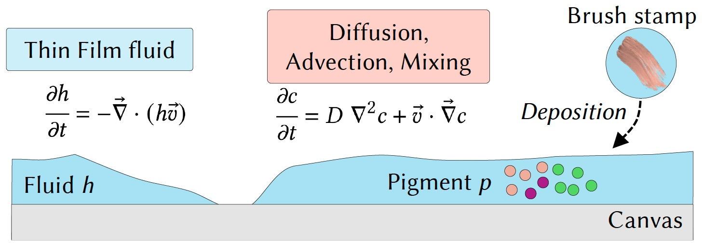
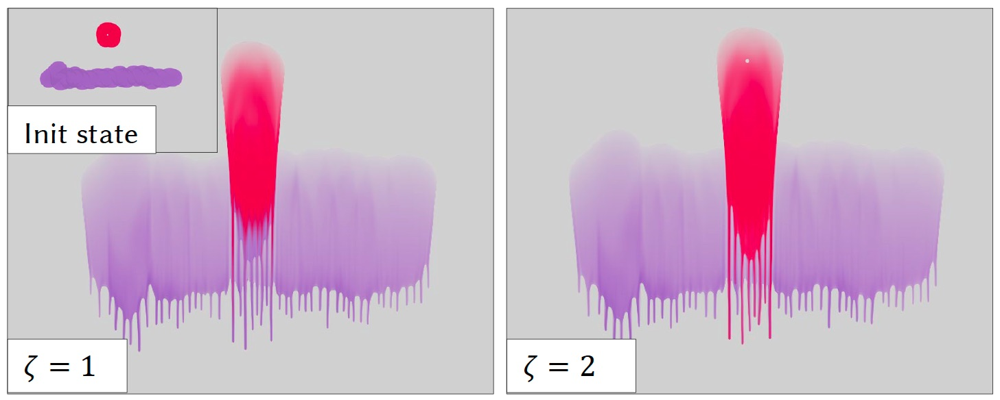
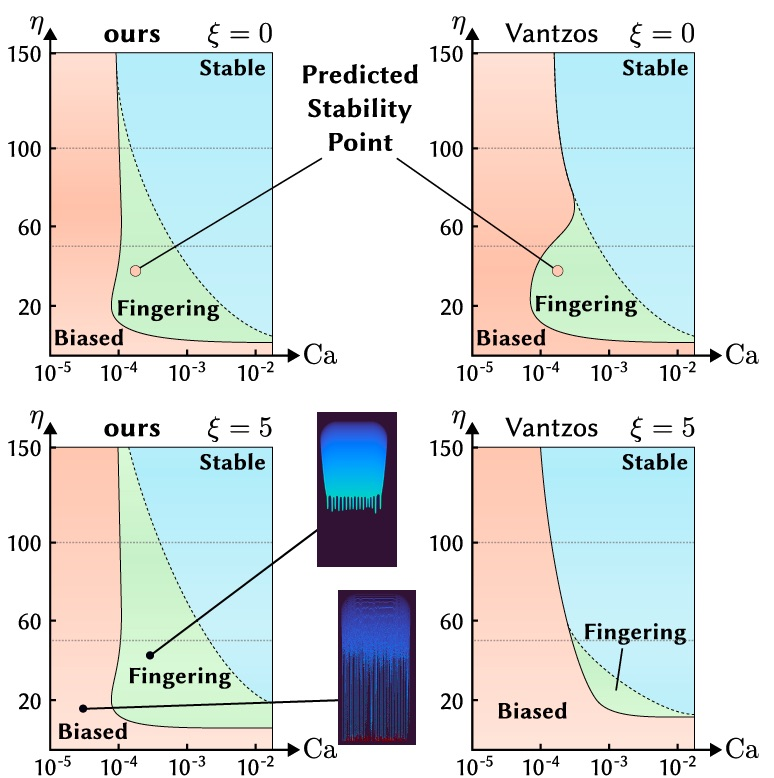
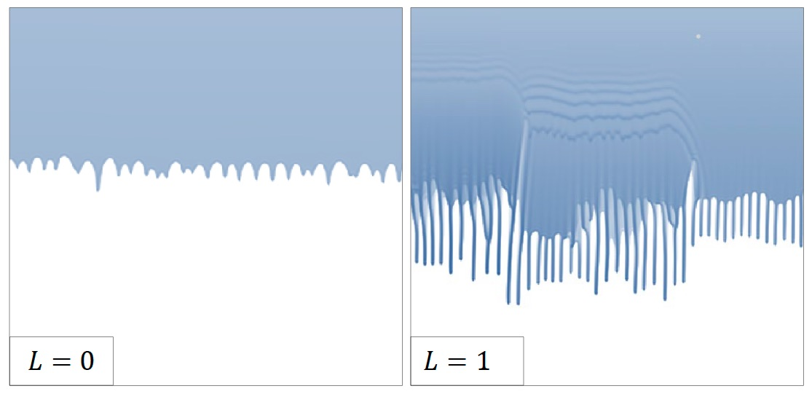

We propose a formulation of a Thin Film model that provides control over the shape of dripping fluid fingers. We analyze its parameter-space
and extract principled parameters to control the dripping features. Combined with a pigment simulation (diffusion, advection, and mixing),
this expands the range of effects that can be artistically explored in a real-time painting simulation.
We present a real-time method to capture and simulate the dynamic behavior of watercolor painting.
We develop a physically accurate, grid-based, real-time fluid simulation based on a reparameterized Thin Film model.
The equations are rewritten so as to create principled parameters that finely control the length, thickness, and
frequency of dripping. Our close connection with physics allows both theoretical and experimental validation of our method.
The resulting system can reproduce dripping, fluid-air interface, and pigment advection and diffusion, all controllable by
the user in real-time. Our experiments show that artists can use our system to create interesting and varied digital paintings.
Video
Overview

Paint is modeled as a thin layer of fluid that carries pigments. It is encoded as
a heightfield $h$ governed by a Thin Film model, and a pigment field that is diffused
and advected along the fluid velocity.

Our Thin Film model enables the emergence of dripping fluid fingers. Combined with a pigment simulation (diffusion,
advection, and mixing), this can be used in a real-time painting simulation. Here we show two different settings
$\zeta$ for the pigment mixing (higher $\zeta$ fosters the color of flowing pigments over static ones).

We study the ranges of parameters for which our model produces dripping fluid fingers without artifacts.
See paper for details.

We add an extra force $\vec f \propto L$ along the normal direction of the canvas plane. This acts as a cohesive
force on the fluid (the opposite of a spread) which in practice tends to create longer dripping patterns.
Citation
@article{herson26dripping,
title = {Dripping Thin Films for Real-time Digital Painting},
author = {Herson, Zoé and Paris, Axel and Michel, Élie},
journal = {Computer Graphics Forum (Eurographics '26)},
year = {2026},
publisher = {The Eurographics Association and John Wiley & Sons Ltd.},
doi = {TODO},
}